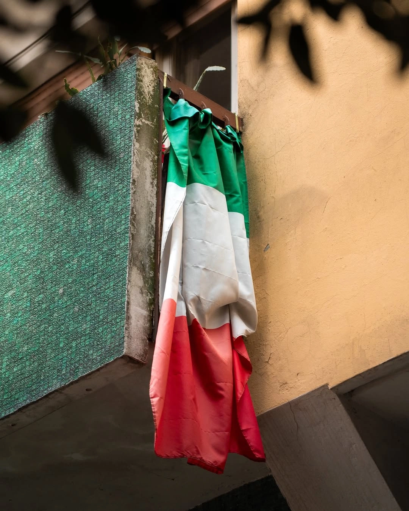
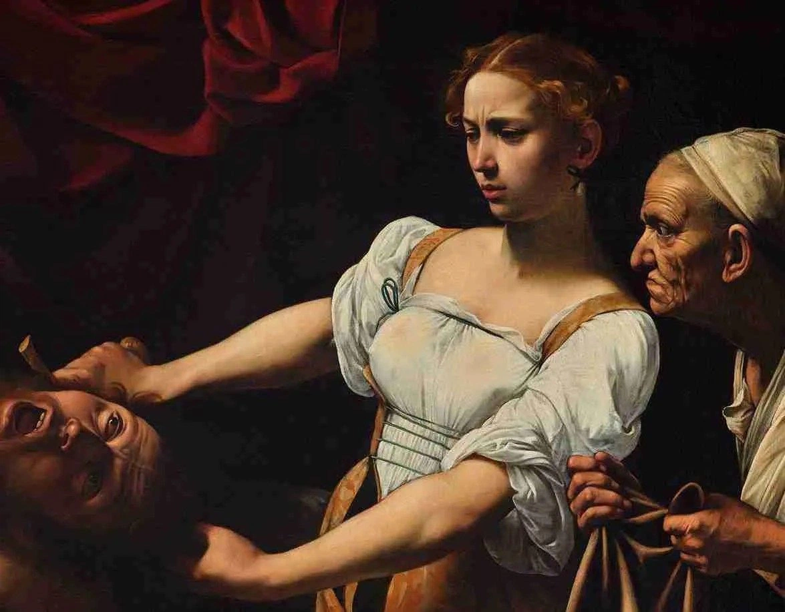
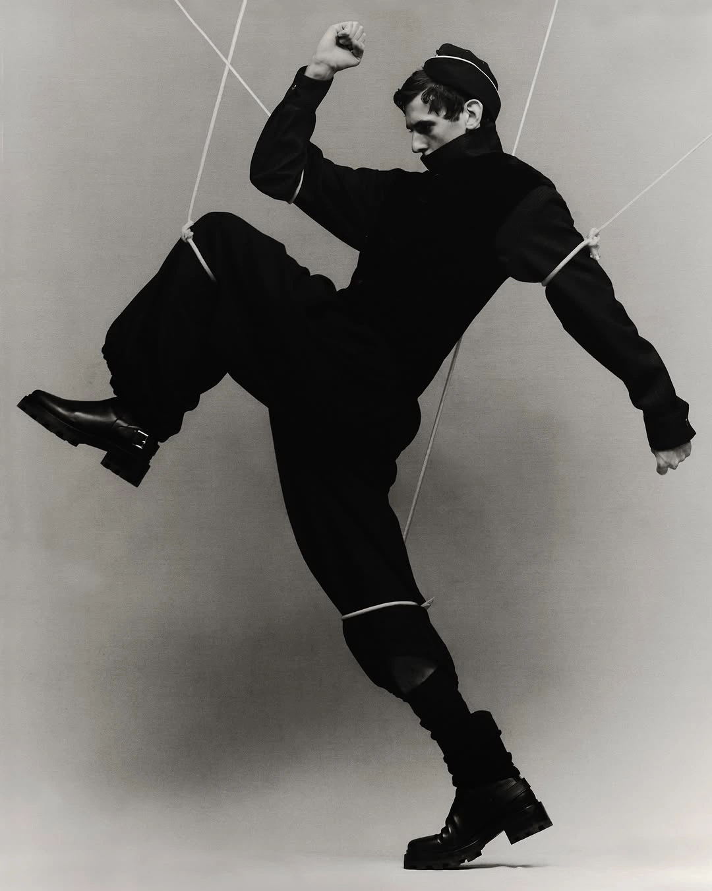

Más que una institución, somos un espacio de encuentro donde las generaciones comparten sus historias, las tradiciones cobran vida y la cultura se convierte en un vínculo que nos une.
Sociedad
Italiana
de Socorros
Mutuos



Actualidad
Noticias de Italia
Una selección de temas de actualidad, cultura y sociedad italiana.
Nuestros proyectos
¿En qué estamos trabajando?
Para lograr la habilitación de la galería y el microcine, la nueva gestión lleva adelante obras de infraestructura fundamental:
Encontranos
Dónde estamos
Belgrano 664